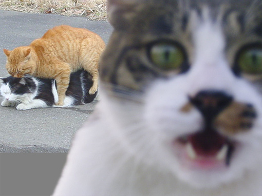
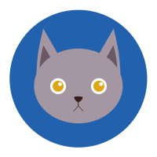

猫的族谱可以追溯到古塞浦路斯和埃及。不像狗天生具有合作本能的驮类动物的驯化，猫的完全驯化（大约4000年前）不是那么容易做到的。

喜马拉雅猫
喜马拉雅猫，这个名字是由于它和叫这个名字的兔子的长相十分相似的缘故，而和喜马拉雅山无关。喜马拉雅猫融合了波斯猫的轻柔、妩媚和反应灵敏，暹罗猫的聪明和温雅。它有波斯猫的体态和长毛，暹罗猫的毛色和眼睛
美国短毛猫
美国短毛猫是原产于美国的一种猫，其祖先为欧洲早期移民带到北美的猫种，并与英国短毛猫和欧洲短毛猫同类。美国短毛猫的身体匀称、有力量，且活泼温顺。幼年短毛猫圆头圆脑，软绵绵的手感和灵活的四肢很是讨人喜欢
苏格兰折耳猫
由于这猫种最初在苏格兰发现，所以以它的发现地和身体特征而命名。这种猫在软骨部份有一个折，使耳朵向前屈折，并指向头的前方。也正因如此，这种猫患有先天骨科疾病，时常用坐立的姿势来缓解痛苦。

橘猫
橘猫（orange cats）是家猫常见的一种毛色，也叫橘子猫、桔猫，普遍存在于混种猫和不具独特规定毛色的注册纯种猫种，与品种无关，与被毛基因有关。国内大部分橘猫都是狸花猫，因此也称为橘狸、黄狸。
白猫
白猫通常指白色的猫，猫是动物界脊索动物门哺乳纲食肉目猫科猫属下的动物。身形像狸，外貌像老虎，毛柔而齿利（有几乎无毛的品种）。以尾长腰短，目光如金银，上腭棱多的最好。

狸花猫
狸花猫是一种体格健壮的大型猫咪，长有美丽的斑纹被毛。尽管它感情不太外露，但还是能成为忠实友好的宠物。狸花猫以聪明的捕猎技巧而著称，需要较大的运动空间，所以不适宜小公寓的圈养生活。

拍照猫
这是一只爱拍照的猫
Tom猫
听说它抓不到一只叫杰瑞的老鼠

程序猫
头发要掉光了
养护
并非官方数据,如有问题,以你为准
喂食ing
猫咪在一个月的之内都是吃母乳，一个月之后就会慢慢的给猫进行断奶。一个月之后的母猫的母乳里的营养跟不上了小家伙的需求了，要靠猫粮或者其他的辅食来补给。刚断奶的猫咪一周内的抵抗力是最低的，并且要格外注意不要让猫出现感冒拉肚子呕吐的情况。在饮食上可以给它幼猫吃的猫粮，这个猫粮要稍微给它泡软一点。
Not enough to eat
铲屎ing
小猫开始都是不会打理自己的，拉屎或者拉尿都是会弄自己一身，这个时候就需要铲屎官来给它们打理，保证猫咪的环境喝身上干净。长毛猫就要格外注意一点，很多时候会弄自己一身。再大一点它的毛发还需要铲屎官定期给它梳理。
Not enough to eat

铲屎ing
猫的洗澡水温度比人的洗澡水温度高约40-44度，并且要注意环境温度，如果温度太冷，可能会使人感冒，特别是对于小猫来说。才刚开始把猫放进去它会挣扎，不用担心是不是水温太烫，它刚开始要适应一下水温。给猫洗澡要注意三个月以下的猫最好不要给它洗，这个阶段的猫抵抗力是比较低的。
Not enough to eat
埃及上苏丹地区，注意到，当地的猫会吃老鼠，这确实是一件非常好的事情
人们对猫如此尊崇，以至于制定了法律来保护它们。由于猫的崇高地位，崇拜猫的宗教秩序发展了两千多年。

在法老统治时期，杀死或伤害一只猫被认为是死罪，即使这只猫是死于一场不幸的事故。如果房子着火了，猫应该放在第一位，而人第二位。
埃及人珍惜他们的猫同伴，所以有法律禁止出口猫。然而，猫擅长捕捉啮齿动物，它们登上了尼罗河上的驳船，成为捕鼠者，成为水手的伙伴。
猫还登上前往地中海沿岸国家的船，这些国家包括：希腊和意大利。慢慢地，猫迁移到印度、中国，在那里它们被视为宠物和灭鼠动物。